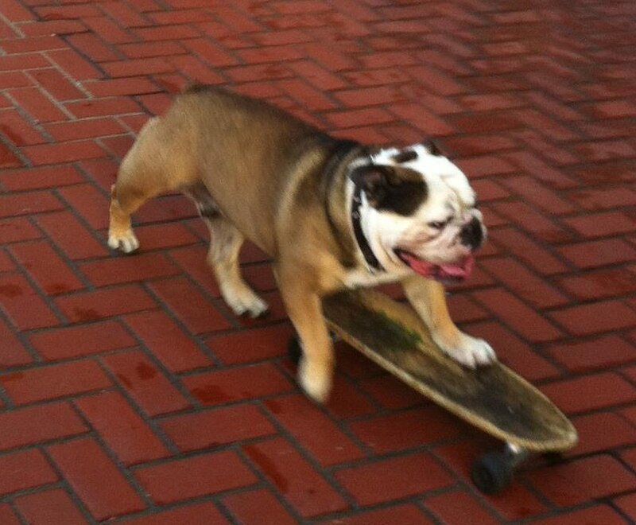

Biografía
Tillman fue un bulldog inglés famoso por sus habilidades de skateboarding y surfing, convirtiéndose en un ícono en las redes sociales. Su dueño, Ron Davis, lo entrenó para realizar trucos de skate y surf, y sus videos se volvieron virales, alcanzando millones de visitas. Tillman incluso rompió el récord mundial del perro más rápido en skate. Lamentablemente, Tillman falleció en 2015 a los 10 años debido a problemas cardíacos.
Tillman ganó legiones de fanáticos con su aparición en un video de YouTube en 2007 que lo mostraba empujando su patineta con sus patas y andando por un camino de concreto en un parque junto a la playa, inclinando su cuerpo para conducir.
En 2009, el talento de Tillman le valió un récord mundial Guinness como el perro en patineta más rápido después de recorrer 100 metros (yardas) en 19,678 segundos en los X Games de Los Ángeles.
A Tillman, además de andar en patineta, le gustaba practicar snowboard, surfear y andar en su asiento especial en un vehículo todoterreno, dijo Davis.
Davis dijo que nunca logró enseñarle a Tillman trucos caninos tradicionales como rodar o pedir limosna, pero el bulldog inglés se adaptó de forma natural al skateboarding. Aun así, le tomó cientos de horas de entrenamiento dominarlo, dijo Davis.
Hazañas y Récords
- Sus videos de skate y surf generaron una gran cantidad de vistas en YouTube.
- Fue reconocido por sus habilidades únicas y se convirtió en una celebridad de internet.
- Rompió el récord mundial como el perro más rápido en skate.
- Fue invitado a programas de televisión y a eventos deportivos, como los X Games.
- Se convirtió en un símbolo de inspiración para muchos amantes de los animales y del skateboarding.
Galería
Un pequeño recuerdo...
Legado y Tributo
Tillman no fue un perro cualquiera: fue una leyenda sobre ruedas. Con su talento para montar patineta, surfear e incluso deslizarse en snowboard, se ganó el cariño del mundo entero. Fue reconocido por el Libro Guinness de los Récords como el perro más rápido en patineta, y apareció en programas de televisión, eventos deportivos y campañas publicitarias, demostrando que los animales también pueden ser estrellas.
Su carisma y alegría inspiraron a millones de personas, cambiando la inmagen del bulldog inglés y mostrando que la pasión y el esfuerzo no entienden de especies. Años después de su fallecimiento en 2015, Tillman sigue siendo recordadocon cariño por fans de todaspartes. Su legado vive en cada video, en cada dibujo de un niño, y en cada perro que hoy sube a una patineta imitando su ejemplo.